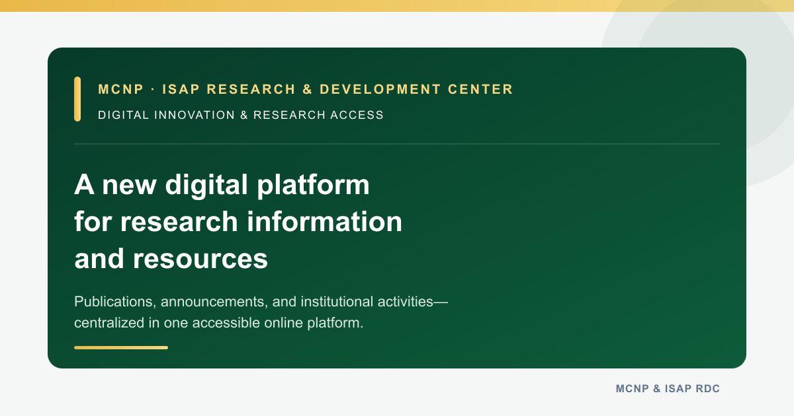

MCNP & ISAP Research and Development Center · October 14, 2026
MCNP–ISAP Research and Development Center Develops Digital Platform to Improve Access to Research Information
The Research and Development Center developed an institutional website to centralize research-related information, publications, resources, announcements, and activities in one accessible online platform.